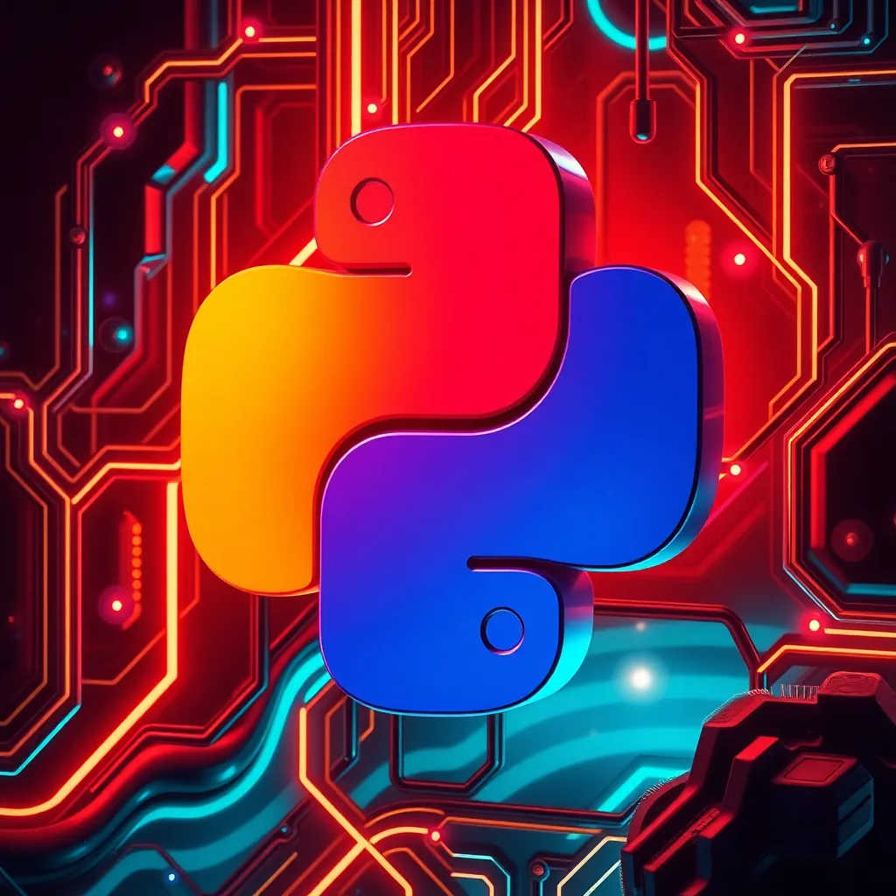

Lenguajes de Programación
Python
Python es un lenguaje de programación de alto nivel, fácil de aprender y usar. Es ampliamente utilizado en inteligencia artificial, análisis de datos y desarrollo web.
- Fácil de aprender
- Amplia comunidad de desarrolladores
- Uso en inteligencia artificial y análisis de datos

JavaScript
JavaScript es un lenguaje de programación utilizado para agregar interactividad a sitios web y aplicaciones móviles. Es ampliamente utilizado en desarrollo web y aplicaciones de realidad virtual.
- Uso en desarrollo web y aplicaciones móviles
- Interactividad en sitios web
- Uso en realidad virtual y juegos

C++
C++ es un lenguaje de programación de bajo nivel, rápido y eficiente. Es ampliamente utilizado en desarrollo de sistemas operativos, aplicaciones de escritorio y juegos.
- Rendimiento rápido y eficiente
- Uso en desarrollo de sistemas operativos
- Uso en aplicaciones de escritorio y juegos
Java
Java es un lenguaje de programación de alto nivel, conocido por su portabilidad y seguridad. Es ampliamente utilizado en desarrollo de aplicaciones empresariales y Android.
- Portabilidad y seguridad
- Uso en desarrollo de aplicaciones empresariales
- Uso en desarrollo de aplicaciones Android